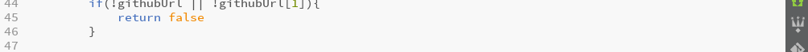
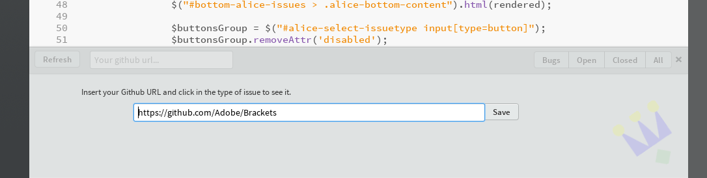
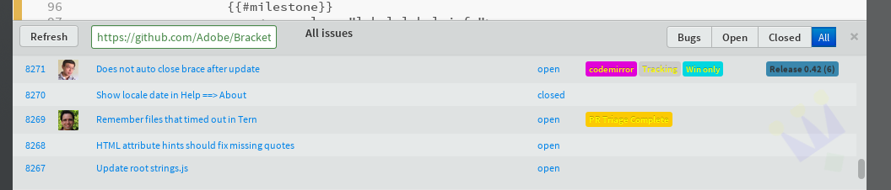
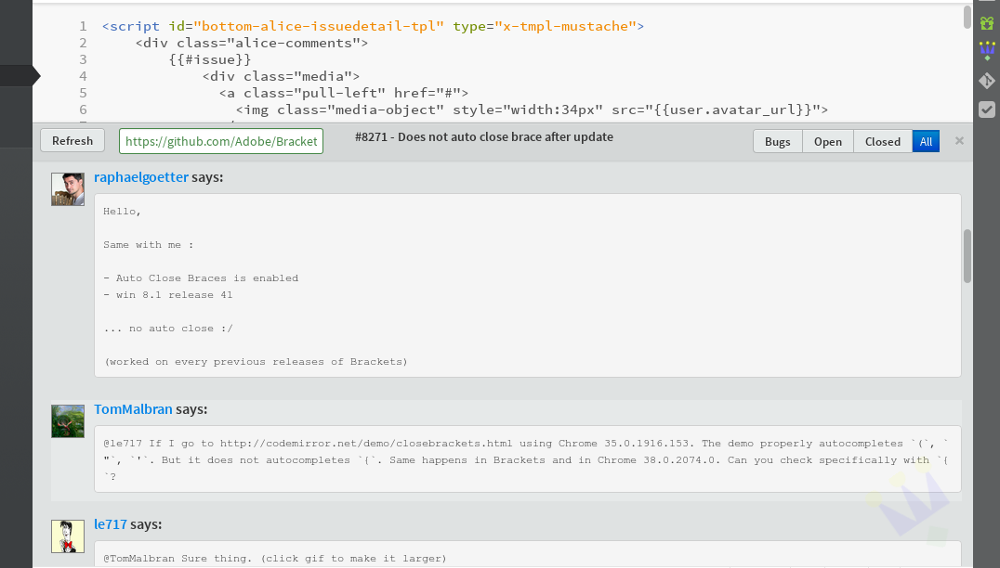

Alice Github Issue Tracker
This project is maintained by Nullpo
This Bracket's extension shows you all the issues from a Github repository. It is under development, so if you have bugs or new ideas, let me know in the brackets-dev google group, or throught a new issue: https://github.com/Nullpo/Alice
To install it, you can do it from the Extensions manager of Brackets. Or you can install it manually cloning the repo:
$ cd $BRACKETS_HOME/extensions/user
$ git clone git@github.com:Nullpo/Alice.git
After installing Alice, you can see the Alice icon in the toolbar on your right:

Click it, and now you see the Alice panel:

Now, put the URL of your github repository, and voilà!

If you click into an Issue title, you can see the details of it!
